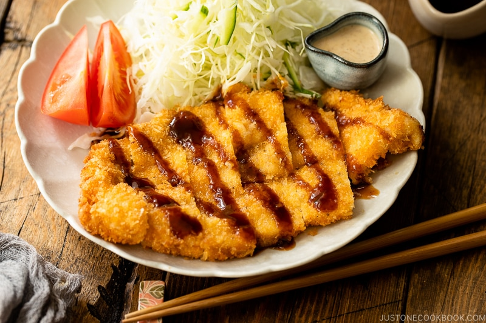

Chicken Katsu

Description
Chicken Katsu is a japanese style fried chicken which is coated in panko crumbs. It is boneless, flattened and cut to be served on rice, sandwiches and more.
Ingredients
- 4 skinless, boneless chicken breast halves- pounded to 1/2 inch thickness
- salt and pepper
- 2 tablespoons all-purpose flour
- 1 egg, beaten
- 1 cup panko bread crumbs
- 1 cup oil for frying
Steps
- Season chicken breasts on both sides with salt and pepper. Place flour, beaten egg, and panko crumbs into separate shallow dishes. Coat chicken breasts in flour, shaking off any excess; dip into egg, and then press into panko crumbs until well coated on both sides.
- Heat oil in a large skillet over medium-high heat. Place chicken in the hot oil, and fry until golden brown, 3 or 4 minutes per side. Transfer to a paper-lined plate to drain